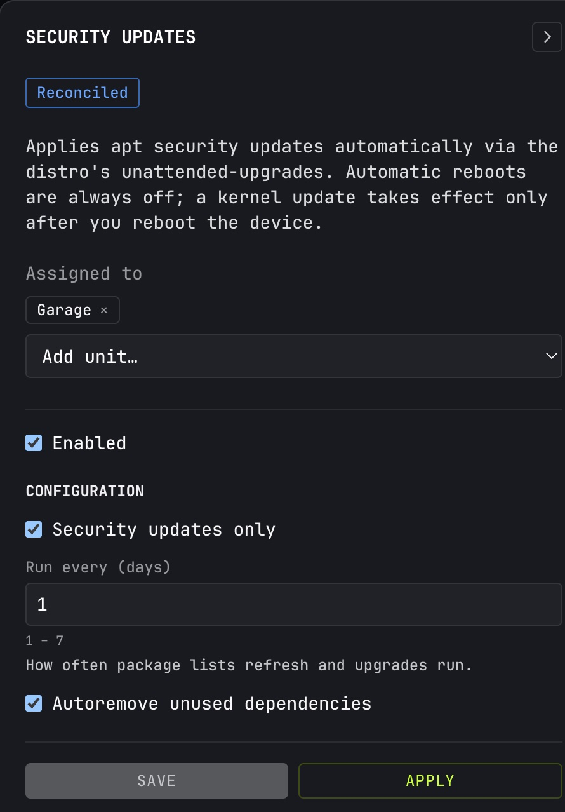
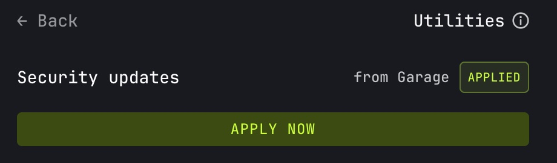

Utilities: managed software
Assign built-in software to a unit and keep it installed and configured.
A utility is software from a built-in catalog that the platform installs and keeps configured on every node its assignment reaches. Which nodes those are is decided by the unit rules on Organizational units and policies.
Assign a utility to a unit
- Open Utilities and the Assignments tab.
- Select the unit in the left rail.
- Click Assign utility and pick one.
- Set the parameters in the panel that opens.
- Click Save.
- Click Apply.

Apply sends what is saved, so save first. Online nodes get it at once and offline nodes when they reconnect. A node you approve later gets its unit's utilities at once.
Text parameters can use {{secrets.NAME}} for variables and {{node.attributes.KEY}}. A secret is refused, because a utility's settings can be read back from the device.
A node needs its installed OS, a Debian-based system and agent 0.6.5 or newer to receive utilities.
See whether it applied
Open the node, then Properties → Utilities.

applied means the device confirmed this configuration. update pending means it changed since, declared means it was never applied, and failed shows the reason on hover. Apply now resends this node's whole set.
Remove an assignment
Click Delete on the assignment. The software stays installed and keeps running, and the platform stops managing it. To uninstall it, run a playbook.
Clear Enabled and save to pause an assignment without losing its settings.
What's in the catalog
- Docker: the Docker engine, with log rotation. Members of the
dockergroup are effectively root. - Kiosk display: one web page fullscreen on HDMI. Brings Docker along.
- Metrics exporter: Prometheus node exporter on port 9100, without authentication.
- Storage endurance: less SD-card wear, with zram swap and a journal cap.
- Tailscale VPN: joins your tailnet. Use a short-lived auth key.
- Security updates: automatic security updates. It never reboots, so reboot yourself after a kernel update.
- ZeroTier network: joins a ZeroTier network.
Example: put a dashboard on a screen
- On Secrets, create a variable
KIOSK_URLwith the dashboard address and attach it to the unit. - On Utilities, select the unit and assign Kiosk display.
- Set URL to
{{secrets.KIOSK_URL}}, leave Kiosk image on the default and click Save. - Click Apply.
- On a node with a screen, open Properties → Utilities and check that Kiosk display shows applied.

A changed KIOSK_URL reaches the screens at the next Apply. To show another page on one screen, assign the kiosk to that node too. The node's assignment wins.